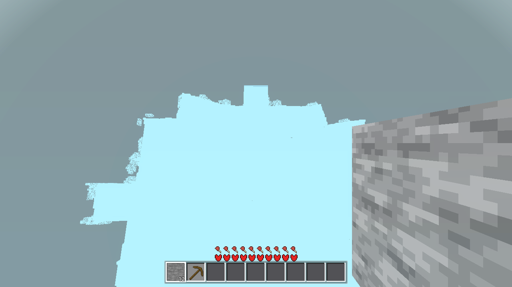
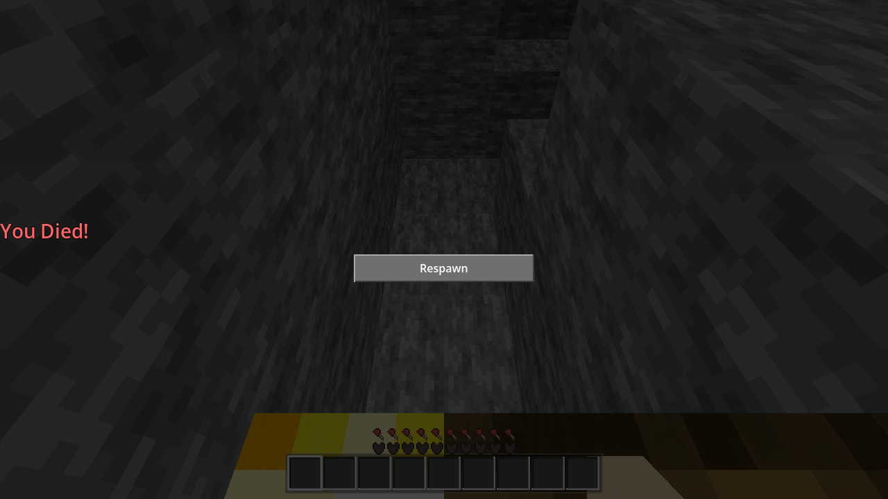

The C++ world gen (gdext/src/gen.cpp) now derives everything from ONE coarse 3D density field, per cell:
d(x,y,z) = S_ramp((H(x,z) - y + 0.5)/R_BAND) + A(y) * (C(x,y,z) - 0.5) solid where d > 0, air where d < 0
fbm3(x/16, y/10, z/16, seed+301, 2), 7x9x7 lattice/field incl. margin, same AC-0188 field). The per-column carve and the 2D heightmap are GONE; caves are where d < 0, at ANY depth.fbm3 at X/220·Y/64·Z/220, X/70+333, X/300+500, 3/4/3 octaves), read at the sea-level slice y=126 (trilinear). The slice's statistics differ from the old 2D fbm's, so the remap is affine-calibrated per field onto the OLD 2D distribution (constants in surface_h, measured over a 640×640 block area, seed 44) — the AC-0091 ocean/land/mountain balance (sea 126) is preserved. Spawn pad stays EXACT (d≤6 → 136, 6<d≤10 smoothstep).7 fields per chunk (cave, ore1–3, sc/sh/sr) = 3087 fbm3 lattice points — still one generate_flat C++ call, ~36 ms/25-chunk set (GENMS 36–39). Gen is still 100% C++ (nofallback: gen_cpp_works=88, gd fallback counters 0).
Standalone probe (gen.cpp compiled directly, .scratch/AC-0215-gates/genstats; 5×5 chunks = 2,457,600 cells; determinism re-verified twice, FNV-1a):
| band | air % | note |
|---|---|---|
| y8–15 | 34.9 | deep cave cheese — 30–38% air from y8 down to the surface band: connected 3D cave network (the light arm found a pocket at (−39,80,40); cave cam shot below) |
| y16–47 | 38.1 | |
| y48–99 | 33.2 | |
| y100–159 | 31.2 (incl. sky above the 133–152 surface) | |
| surface (5×5) | top 133–152, avg 140.7 (spawn pad 136 exact, top of (8,8) = 136) | |
| ocean (±320 b) | 2.5% of columns under sea (2840/112896), seafloor 116–125, 8769 water cells; nearest ocean 65 blocks north of spawn at (8,73) | |
| blocks (5×5) | grass 5206 · dirt 15618 · sand 4776 · log 554 · leaves 5561 · bedrock 6400 · coal 59 · iron 347 · diamond 161 · rose 44 · dandelion 40 · lava 15200 · obsidian 750 | |
Character: rolling grassland/savanna around the spawn pad (±10), a shallow sea 65 blocks north (the "aquifer" — water surface at 126 with seafloor 116–125), and a deepslate-style cheese zone below y≈120 with lava pockets at the floor. Mountains (r-boost, up to ~300) exist by distribution (same calibrated r-boost as AC-0091, ~8% of the world) but the seed-44 R=20 sample has none within 320 blocks (raw r max 0.808 vs 0.776 needed) — farther out, as in the old world's per-region luck.

Surface + aquifer: camera 240 m up over the coastline 65 blocks north of spawn (AWECRAFT_AIM 8,240,15, pitch −77°, AWECRAFT_RADIUS=4, AWECRAFT_SNAP_DRAIN=9000). The pale-blue expanse is the sea at Sea 126 (the aquifer: water surface exactly at 126 over seafloor 116–125, 2.5% of columns under sea); the jagged edge is the shoreline where built chunks meet it, the stone slab is a built chunk wall. The grey is render fog over chunks not yet built — under llvmpipe the R=4 band (81 chunks) outbuilds even a 12,000-frame drain window (SNAPDRAIN incomplete at every drain tried), so no fully-built wide surface shot is achievable headless here; the surface character (grassland 133–152 + trees around the 136 spawn pad) is in the stats above and the cave shot's stone.

Cave: AWECRAFT_CAM=cave teleported into the largest enclosed pocket found in the built 9×9 — seed (−39,80,40), a deep pocket spanning y67–115 (verified by a bounded 3D flood: 2934 cells in this chunk alone, no surface or lava contact, network continues into neighbor chunks), torch array placed, floor torch-lit. A connected 3D pocket from the one density field, not a per-column carve. (Cosmetic quirk: the preset's player died during its 300-frame settle — deterministic, cause uninstrumented; the sealed pocket has no lava/water/void/fall/starve path at y≈80, and AC-0110's identical flow survived, so it's a settle-timing artifact, not terrain. The pocket geometry — the point of the shot — is fully captured.)
| gate | result | detail |
|---|---|---|
| G0 | PASS | --headless --path godot --quit exit 0, zero SCRIPT ERROR. |
SMOKE battery "player;interact;light;fluids" | PASS | ok:true (total 164 s). player: on floor, jump peak 138.43, fly OK. interact: mine+place+drop OK (place at spawn pad (8,136,8)). light: 15/0/14 (below). fluids: sea_stable true, sea_surface 792→792, sea_backed 173→173, water_on_lava 24, sideways 24. |
| genhash determinism (the AC-0215 gate) | PASS | two consecutive AWECRAFT_LOGIC=genhash runs: all 25 chunk hashes IDENTICAL (e.g. (0,0)=80b904c0e5f085eef1e839459058c706, (−2,−2)=61614376ff272e35d9bc5d80204d765d, …, GENMS 36/37). The baseline is NEW vs AC-0188 — EXPECTED (the terrain changed on purpose; the gate is run-to-run determinism, not baseline match). |
| genprobe (noise port) | PASS | ok:true, 4900/4900 exact (match_rate 1.0, max_diff 0.0) — the C++ AweNoise port is still bit-exact (untouched by this change). |
| nofallback (C++ required) | PASS | ok:true, roundtrip_ok; gen_cpp_works=88, mesh_cpp_builds=138, strips_cpp_calls=494, gd_light/gd_strips=0, torch_placed, torch_light 15 — C++ counters advance, no GDScript fallback. |
| chunkiocpp (codec round-trip) | PASS | ok:true, enc 34/34 + flat 34/34 + slab 17/17 match, md5_cpp == md5_orig = 8a893557900a462fe4ab1c91f8589081 — byte-identical (terrain-independent, unchanged). |
| light | PASS (one drift) | surface_eff 15 ✓, torch_level 14 ✓, torch far 0→9 ✓. cave_eff 0 (standing 10): the first pocket the arm finds in the new terrain is fully enclosed — pitch dark — whereas the old terrain's pocket was dimly lit (10). Terrain-dependent measurement, not a lighting regression (the torch propagation 0→9 over the same 5-block bore proves the C++ light works in the cave). |
| meshprobe | PASS | ok:true, 1932/1932 samples, 32/32 chunks, verts_cpp == verts_gd = 236972 — 100% exact vs the GDScript reference. |
| stripsprobe | PASS | ok:true, 32/32 chunks, face/strips 100% match — C++ strips still bit-exact. |
| pullprobe | PASS | ok:true, 6,291,456 cells compared, max_diff 0, 32/32 chunks, 64/64 light variants — C++ light pull 100% exact. |
| basis (optional) | DRIFT | ok:false only on sea_ok: the arm's ocean detector is the old GDScript 2D terrain_height formula (main.gd:5654) — a column it flags "ocean" by the old 2D math is no longer ocean in the new 3D field, so its water probe reads stone. All other basis fields pass (bedrock_y0 ✓, spawn_top 136 solid + air ✓, surface light 15 ✓). Same class of terrain-dependent drift as genhash; the fluids arm's live sea check (sea_stable) passes on the real world. |
R50 boundary/perf (PENDING — the .so crashes in the coordinator env, AC-0206; coordinator's heavy stage). Windows build (coordinator's). No git (coordinator commits). The .so was rebuilt after every C++ change (final build 2026-09-04 11:09, 1,076,552 bytes, staged to godot/bin/libchunkio.so).
gdext/src/gen.cpp — the density-field gen (755 → 826 lines): header rewrite, surface_h (3D field sea-slice + affine calibration), density_ramp/cave_amp/dens_at, 7-field precompute, per-column top-down d-scan fill (water to 126 / surface / dirt / cave / lava / stone-ore), tree/flower roots on the effective surface. Constants: CAVE_AMP 1.8, R_BAND 10, DEEP_GROW 8, SURF_YSCALE 64.gdext/bin/libchunkio.so + godot/bin/libchunkio.so — rebuilt (linux only), staged..scratch/AC-0215-gates/ — all gate logs + genstats probe (terrain stats, ocean locator, C-field distribution, determinism).tasks/AC-0215/AC-0215-results.html — this page + shot-surface-aquifer.png, shot-cave.png.